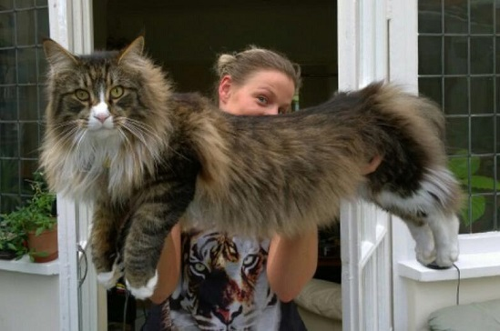
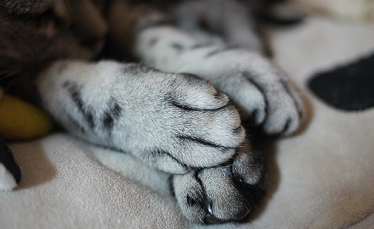
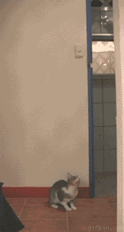
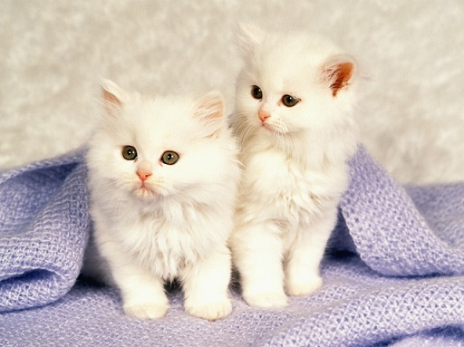

고양이는 다른 동물들보다 눈과 동공이 매우 크다. 그리고 세로 동공, 즉 '고양이 눈'은 해가 쨍쨍하게 비치는 밝은 장소로만 한정되며 집 안의 밝기 정도에서 크고 예쁜 눈을 유지한다.
눈꺼풀이 두겹이라 속 눈꺼풀이 잠기고 겉 눈꺼풀만 떴을 때는 무서운 모습으로 보여질 수 있다.
특히 하품할 때 이런 경우가 가끔 있는데 쩍 벌린 입, 날카로운 이빨과 함께 심히 호러스러운 광경을 목격하게 된다.

흔히들 고양이라고 하면 집고양이를 떠올리기 때문에 외소하고 작다고 생각하는 사람들이 많다.
하지만 큰 고양이는 그림처럼 5kg이 넘는 대형인 경우도 존재한다.
고양이의 귀는 고양이의 현재 감정을 의미한다고 한다. 이는 귀에 32개의 개별 근육이 존재하기 때문에 가능한 것이다. 이런 특징 때문에 귀를 별도로 움직여 들을 수 있기도 하고 몸을 한방향으로 움직이면서 귀를 다른 방향으로 움직이게 해준다.

키워보지 않은 사람은 모를 수 있다! 고양이 뒷발은 발가락이 4개 밖에 없다. 따라서 전체 발가락 수는 18개이다.

고양이의 감각은 사냥에 맞추어져 있다. 고양이는 고도로 발달된 청각, 시각, 미각 그리고 촉각이 있어 다른 포유류들보다 극도로 예민하다.
시력의 경우 야간 시력은 사람보다 우수하나 낮 시간의 시력은 사람보다 열악하다. 눈을 보면 휘막이 있으며, 푸른 눈은 일반적으로 멜라닌 색소가 부족하여 적목현상을 보일 수 있다.

마지막으로 고양이의 귀여움의 큰 비중을 차지하는 털이다. 목욕을 자주 시켜주지 않아도 스스로 털을 고르기 때문에 지저분하지 않게 보일 만큼 매우 깔끔한 동물이다. 자기 관리 또한 완벽한 동물이라 실제로 주인의 손이 많이 가지 않기도 한다고 한다.